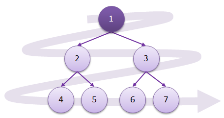
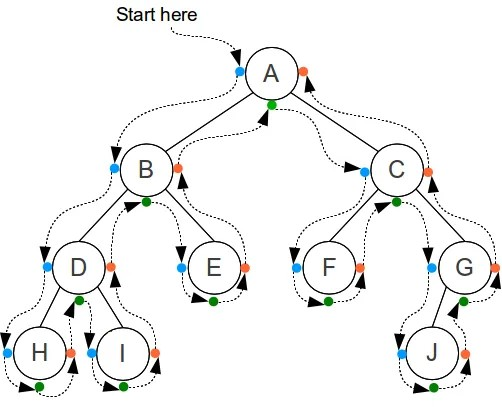

Introduction:-
The process of visiting and exploring a graph for processing is called graph traversal. Sequence of steps known as Graph Traversal Algorithm that can be used to traverse a graph.
They are of two types:-
1. Breadth First Traversal(BFT)
2. Depth First Traversal(DFT)
Breadth First Traversal(BFT):-
It is a technique that selects a node and visits all nearby nodes in 1st level and goes to another. This algorithm uses a queue (first in first out) data structure. The queue size is determined by the total number of vertices in the graph.
Working Process of BFT:-

Depth First Traversal(DFT):-
It is a technique that explores the graph in depth-first order, starting with source node and then repeatedly visits its surrounding vertices before backtracking. It will analyze(explore/visits) to the deepest vertices in a branch of the graph before moving on to other branches. It uses stack (last in first out) data structure.
Working Process of DFT:-

Differentiate between BFT and DFT:-
| Breadth First Traversal | Depth First Traversal |
|---|---|
| It uses queue data structure. | It uses stack data structure. |
| It is slower and requires more memory. | It is faster and requires less memory. |
| It visits nodes level by level. | It visits nodes of graph depth wise. |
| Backtracking is not required. | Backtracking is required. |
Graph Traversal's real-life appliactions are social media (i.e. Facebook, Youtube, Twitter, etc.), networking, checking cycles in graph, etc.
Thank you for watching !
-Bishal Thapa